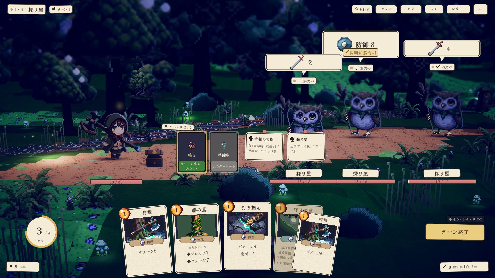

①
からくりの札と置物の付箋が舞台の真ん中 (敵1の足元) に浮く。箱庭の絵を分断し、敵と重なる
②
吹き出しは奥の敵ほど高く (y120〜210)、名前札は 400px 下＝1体の情報が縦に散る。敵3体で3つの高さを読む
③
ホバーで持ち上がった札が隣の本文を隠す (5枚目の守りの蔓)
④
被ダメ予測が無い (ブラウザ版は HP の直下にある)
現状 PC (2026-09-15 348a23b)・1920×1080